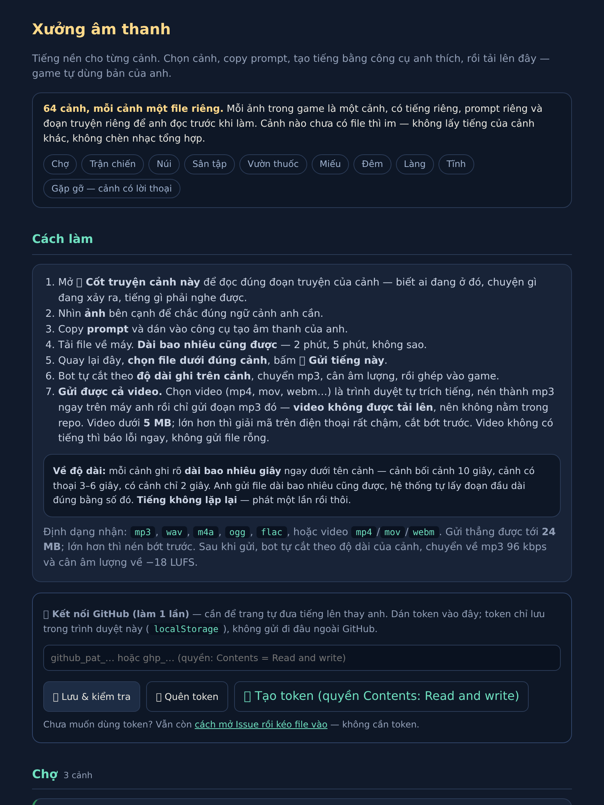

Tìm ra 5 lỗi thật. Đã sửa, đã đẩy lên, đã kiểm trên trang live bằng trình duyệt iPad.
Nút này chỉ hỏi GitHub một câu: “có file cùng tên không?”. File cũ vẫn nằm đó, nên câu trả lời luôn là có — dù bản anh vừa gửi chưa hề lên trang.
Em chứng minh bằng cách không gửi gì cả, chỉ bấm Kiểm tra:
Trước khi sửa: ✅ Đã có tiếng trên trang. Sau khi sửa: Đang phát bản 467e0973 · 118 KB.
Giờ nó tải thật file, băm nội dung (SHA-256), rồi so với bản chốt trước lúc gửi. Chỉ báo “bản mới đã lên” khi mã băm đổi thật.
File lần đó y hệt lần gửi trước (cùng một mã băm). GitHub nhận, nhưng không tạo thay đổi nào. Workflow lọc theo đường dẫn nên không chạy. Anh chờ, và tiếng vẫn là bản cũ.
b25715b parents=ecfa5fc ← 0 file thay đổi tree ecfa5fc = 13c09e86… ← giống hệt tree b25715b = 13c09e86…
Giờ trang so mã băm với bản trên GitHub trước khi gửi, và báo thẳng: “File này y hệt bản đã gửi trước đó — chọn bản thu mới.”
Bước dọn hộp nhận xoá mọi file, kể cả file bot vừa xử lý lỗi. Tiếng không lên trang mà file cũng biến mất — không còn gì để chạy lại.
Giờ chỉ xoá file đã xử lý xong. File lỗi được giữ lại, kèm cảnh báo trong log.
Deploy GitHub Pages hay hỏng tạm thời. Nhưng khi bấm chạy lại, hộp nhận đã rỗng nên điều kiện deploy sai → deploy bị bỏ qua. Giờ chạy tay luôn deploy lại bản đã commit.
Hai chỗ, cả hai đều làm tiếng cũ sống dai:
| Chỗ | Trước | Sau |
|---|---|---|
| Đệm tiếng đã giải mã | khoá theo mã cảnh → bản cũ giữ hết phiên chơi | khoá gồm mã băm nội dung |
| Đọc danh sách tiếng | chỉ đọc 1 lần, không bao giờ đọc lại | quay lại trang là đọc lại, bỏ đệm cũ |
Lỗi thứ hai giải thích đúng cảnh của anh: Safari trên điện thoại khôi phục trang từ bộ nhớ đệm, trang sống qua lúc bot đẩy tiếng mới, nên cả phiên vẫn phát bản cũ.
Sau khi đẩy, em mở trang live bằng trình duyệt giả lập iPad và bấm Kiểm tra:

| Hạng mục | Kết quả |
|---|---|
| Mã băm file trên trang live | 467e0973 — khớp file thật |
| Manifest (danh-sách.json) | 44/44 mã băm đúng |
| Trang xưởng bản mới | đã lên, không lỗi JS |
| Game đọc danh sách | 44 cảnh, khoá đệm có phiên bản |
| Bấm Kiểm tra khi không gửi gì | nói đúng bản đang phát, không báo “đã xong” |
tan_xa_dot_pha và tan_xa_suyt_lo có nội dung giống hệt nhau (cùng md5 0a5eb8ed…), gửi cách nhau 55 giây. Nhiều khả năng anh chọn nhầm cùng một file cho hai cảnh.
Cách dùng từ giờ: gửi tiếng, rồi bấm 🔄 Kiểm tra. Trang sẽ nói rõ “Vẫn là bản cũ” hay “Bản mới đã lên trang (mã cũ → mã mới)”. Nếu Safari còn giữ bản cũ, tải lại trang một lần là chắc chắn sạch.